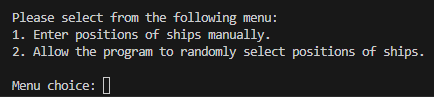
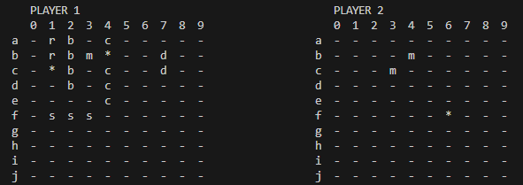

This is the starting screen which explains the rules.

This screen asks you to select the ship placement mode.

This screen shows your board, the your current hits and misses on the enemy's board, and asks for your move.

Here is the board after a few hits and misses.